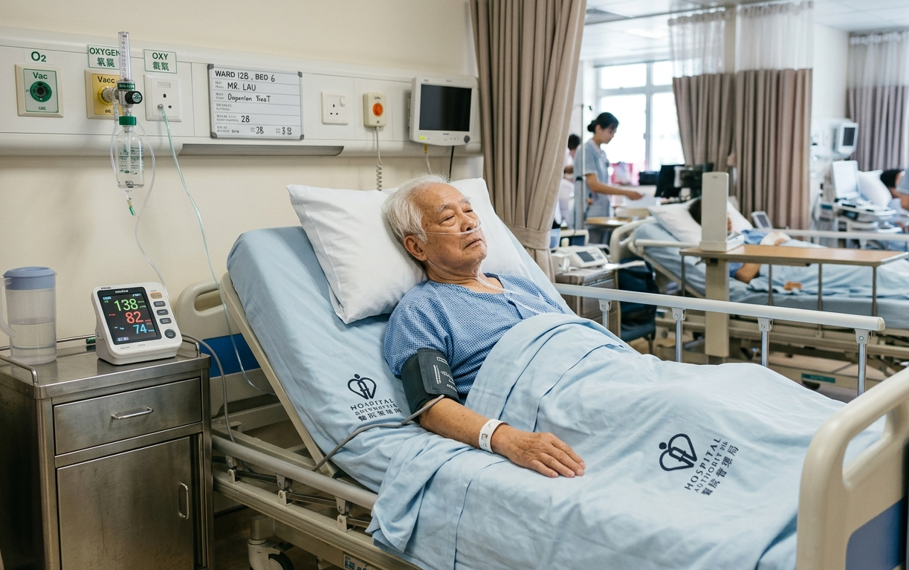

- Resume Losartan Potassium
- Start Aspirin today
- Continue Augmentin
- Sputum c/st if any
- Chest physio
When you approach him, you find him drowsy and ill-looking.

1🩺 What investigation results would you like to check / what P/E would you like to perform?
Tap each option to reveal the finding.
1. Recheck GCS
2. Vital signs stat
3. H'stix stat
4. Assess mobility level
2 💊 What management would you provide?
📊 Final Score & Response Chart
Your total score
Q
Option
Indicated?
Your Selection
🧪 Investigations – Explanation
Q1-Option 1: Recheck GCS
GCS should be assessed to see if there is any neurological decline. A drop in GCS might indicate stroke progression / restroke / hemorrhagic transformation which are conditions that require immediate medical attention. In fact, the risk of recurrent stroke in the week after a TIA or minor stroke is up to 10% [1].
Q1-Option 2: Vital signs stat
Vital signs should be checked to look for possible causes of drowsiness.
High fever may indicate infection which causes one's body to redirect cellular energy to fight against pathogens, potentially leading to fatigue and drowsiness.
A low blood pressure can cause drowsiness as blood flow to the brain is reduced.
Bradycardia / tachycardia can limit the heart's ability to pump blood properly, leading to drowsiness or fainting.
Finally, a low SpO2 level may indicate hypoxemia, leading to drowsiness.
As Mr. Lau has stable blood pressure and heart rate, has normal SpO2 level and has no fever, the above are likely not the causes of his drowsiness and other diagnoses should be considered (e.g. restroke).
Q1-Option 3: H'stix stat
H'stix should be checked to see if hypoglycemia / hyperglycemia is causing Mr. Lau's drowsiness.
Hypoglycemia may cause drowsiness as the brain does not have enough fuel, i.e. glucose to function properly, while hyperglycemia happens when body cells fail to utilize glucose in blood due to insulin resistance / insufficient insulin in the body.
Since Mr. Lau's H'stix level is within normal range, the above are likely not the causes of his drowsiness and other diagnoses should be considered (e.g. restroke).
Q1-Option 4: Assess mobility level
As there is change in Mr. Lau's condition, mobility assessment should not be performed until medical emergencies are cleared.
💊 Management – Explanation
Q2-Option 1: Keep bed rest and clarify with case nurse + Option 2: Bedside sitting / walking +/- sit out of bed + Option 3: Gentle limbs ROM exercise
Noting a drop in GCS of Mr. Lau, we should clarify with case nurse on whether Mr. Lau's condition has deteriorated. We should suspend mobilization and allow bed rest until medical emergencies are cleared.
Q2-Option 4: Chest physiotherapy
Chest physiotherapy should still be performed as Mr. Lau is suffering from chest infection. We should assist in maintaining bronchial hygiene and sputum sampling. However, cough stimulation and vigorous chest physiotherapy, e.g. tracheal suctioning and chest percussion should be refrained until the cause of drowsiness is clarified. This is because these maneuvers may lead to a rise in intracranial pressure [2] [3], which may worsen Mr. Lau's condition.
📚 Learning Points
Key Points
When a patient presents with drowsiness, it is important to first rule out acute neurological changes (e.g. stroke progression / restroke / hemorrhagic transformation) and common causes of drowsiness (e.g. infection, hypoglycemia, hypotension, hypoxemia).
In case of any sudden change or deterioration in a patient's condition (e.g. a drop in GCS), mobilization should be halted and bed rest should be maintained until emergencies are thoroughly cleared..
While managing concurrent issues like chest infection, it is important for us to maintain patient's bronchial hygiene while vigorous techniques (e.g. cough stimulation, chest percussion, tracheal suctioning) should be refrained in a drowsy patient until the cause of altered mental status is identified.
References:
[1] Sanossian N, Ovbiagele B. The risk of stroke within a week of minor stroke or transient ischemic attack. Expert Opinion on Pharmacotherapy. 2008 July 31;9(12):2069–76.
[2] Brucia J, Rudy E. The effect of suction catheter insertion and tracheal stimulation in adults with severe brain injury. Heart & Lung. 1996 July;25(4):295–303.
[3] Ferreira LL, Valenti VE, Vanderlei LCM. Chest physiotherapy on intracranial pressure of critically ill patients admitted to the intensive care unit: a systematic review. Revista Brasileira de Terapia Intensiva. 2013;25(4).